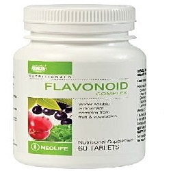

Flavonoid Fraction

- ဒီေဆးသည္ ေသြးျပန္ေၾကာမ်ားကို က်ဳံ႕ေစသည္။
- ေသြးေၾကာမ်ား၏ လုပ္ငန္းေဆာင္တာမ်ားကို ေကာင္းမြန္ေစသည္။
- လိပ္ေခါင္း ကဲ့သို႕ေသာ နာတာရွည္ ေသြးျပန္ေၾကာ ေရာဂါမ်ားတြင္ အသုံးျပဳသည္။
- ထိုအျပင္ လိပ္ေခါင္းခြဲစိတ္ျပီးေသာအခါ လကၡဏာေဝဒနာမ်ား သက္သာေစရန္လည္း အသုံးျပဳသည္။
- ေစ်းကြက္ထဲတြင္ Daflon ဟု အသိမ်ားသည္။
အသုံးဝင္ပုံ
- ေျခေထာက္မ်ားေလးလံျခင္း နာက်င္ျခင္း ညဘက္ၾကြက္တက္ျခင္း စေသာ ေရာဂါ လကၡဏာမ်ား ခံစားရေသာ နာတာရွည္ ေသြးျပန္ေၾကာ ေရာဂါမ်ားတြင္ အသုံးျပဳသည္။
- လိပ္ေခါင္းေရာဂါ ရုတ္တရက္ ပိုဆိုးလာပါကလည္း အသုံးျပဳသည္။
- ထို႔အျပင္ ေျခေထာက္တြင္ အျဖစ္မ်ားေသာ ေသြးေၾကာထုံးျခင္းႏွင့္ ေသြးလည္ပတ္မွု မေကာင္းျခင္းမ်ားအတြက္လည္း အသုံးျပဳသည္။
သုံးစြဲပုံ
- နာတာရွည္ ေသြးျပန္ေၾကာ ေရာဂါမ်ားအတြက္ တစ္ေန႔ႏွစ္လုံး ပုံမွန္ ေသာက္ပါ။
- လိပ္ေခါင္းေရာဂါ ရုတ္တရက္ ေသြးထြက္မ်ားပါက တစ္ေန႔ ေျခာက္လုံး ေလးရက္ေသာက္ပါ။ ထို႔ေနာက္ တစ္ေန႔ ေလးလုံးကို ေနာက္ထပ္ သံုးရက္ ဆက္ေသာက္ပါ။
ေဘးထြက္ဆိုးက်ိဳးမ်ား
အခ်ဳိ႕ေသာလူနာမ်ားတြင္ အစာအိမ္ႏွင့္အူလမ္းေၾကာင္း လကၡဏာမ်ား (ဗိုက္ေအာင့္ျခင္း ဝမ္းေလ်ာျခင္း) ႏွင့္ အာရုံေၾကာ လကၡဏာမ်ား အနည္းငယ္ ခံစားရႏိုင္သည္။
သို႔ေသာ္ ေဆးေသာက္ျခင္းကို ရပ္ပစ္ရန္ မလိုအပ္ပါ။
သတိျပဳရမည့္အခ်က္မ်ား
- ေဆးေသာက္ရန္ ေမ့သြားပါက သတိရရျခင္းေသာက္ပါ။ အကယ္၍ ေနာက္တစ္ႀကိမ္ ေသာက္ရန္ႏွင့္ နီးေနပါက ေမ့သြားေသာ အႀကိမ္အတြက္ ေသာက္ရန္ မလိုပါ။
- ကိုယ္ဝန္ေဆာင္ခ်ိန္ ေသာက္ျခင္းျဖင့္ အႏၲရာယ္ရိွေၾကာင္း မေတြ႔ရိွရပါ။ သို႕ေသာ္ ဆရာဝန္ႏွင့္ တိုင္ပင္ ေဆြးေႏြးရန္ လိုအပ္သည္။ သို႕ရာတြင္ ႏို႕တိုက္မိခင္မ်ားတြင္ မသုံးစြဲသင့္ပါ။
ေဆးအာနိသင္
- Amlodipine, Aspirin, Atorvastatin, Metformin, Digoxin စေသာေဆးမ်ားႏွင့္ တြဲမေသာက္သင့္ပါ။
- အျခားေဆးမ်ား ေသာက္သုံးေနသည္ ရိွပါက ဆရာဝန္ႏွင့္ တိုင္ပင္ ေဆြးေႏြးပါ။
ေဆးအလြန္အကၽြံသုံးျခင္း
- ေဆးပမာဏ မ်ားစြာ ေသာက္ျခင္းသည္ ေရာဂါလကၡဏာမ်ား မသက္သာေစသည့္အျပင္ အဆိပ္ သင့္ျခင္းႏွင့္ ျပင္းထန္ေသာ ေဘးထြက္ဆိုးက်ိဳးမ်ား ရေစသည္။ ထိုအခါမ်ိဳးတြင္ အေရးေပၚ အဆိပ္ကု ဌာနသို႔ သြားေရာက္ျပသရန္လိုသည္။
- ေဆးေတြကို ဘယ္ေဆးမဆို ဆရာ၀န္ ဒါမွမဟုတ္ တတ္ကၽြမ္းနားလည္တဲ့ က်န္းမာေရး၀န္ထမ္းေတြရဲ႕ ညႊန္ၾကားခ်က္အတိုင္း တိတိက်က် ေသာက္သင့္ပါတယ္။
- မိမိသေဘာနဲ႔ေဆးရပ္လိုက္တာမ်ဳိး မလုပ္သင့္ပါဘူး။
- ေဘးထြက္ဆိုးက်ဳိး ျပင္းျပင္းထန္ထန္ ခံစားရရင္ေတာ့ ဆရာ၀န္နဲ႔တိုင္ပင္ဖို႔ လိုအပ္ပါတယ္။
Source– ေဒါက္တာခ်စ္စႏီၵေက်ာ္